Maria here, an aspiring Multimedia Designer in the works.
Currently studying at UCL Erhvervsakademi og Professionshøjskole (Univercity College lillebælt) here in the city of
Odense, Denmark.
What's to know about me?
Well, I'm 23 years old, a certified gamer, a lover of all things delicious and eatable, a geek at heart, and have a
passion for art. Hey, that rimed!
Growing up I always had a passion for the creation of things, whether it be food, art, buildings with legos, or anything
on a computer, it had me intrigued and full of wonder. And now, I follow that initial wonder, to learn more about
design, and the amazing code that makes it all come together.
Although quite young in the big coding scene, I am not discouraged by what I don't know, rather I find the challenge of
the unknown to be a journey (like that of a videogame). A journey in which I get to study codes like a spy on a mission,
meeting people and allies, in an ever-changing and evolving field.
It is for this very reason I decided to study Multimedia design. I wanted to know more, about design, UI, UX, web
development, and the whole work that goes into digital platforms today. I still have a long way to go before I can
create masterpieces, but every day moving forward, gives me inspiration and opportunities.
About 2½ years ago I made the big decision to move to Odense, to study Multimedia design, a decision I have never even once regretted.
Originally from the outskirts of Copenhagen, I got drawn to Odense first when visiting my big brother, and then later by falling in love with the city itself.
I come from your stereotypical family, having one older brother, who as it happens also not only lives here in Odense (a factor which made the city even more attractive) but also studies to become a Data technician with programming as his major (He has been my mentor, biggest ally and inspiration).
Much like the average person, I have my hobbies passions, and daily routines, some of which I have been told make me a bit of a geek or nerd. However, to me, those terms are complements rather than insults, as I am simply doing what I want to do and following my dream.
More often than not I can be found around or on my computer, either watching my favorite show, playing a game, reading my web novels (Or webtoons), watching tutorials on youtube, or working on smaller coding projects. Of the former, it is probably the games that take the cake.
When I am not at home, I often spend time exploring the city, taking pictures of scenery and buildings, both as research and inspiration for designs, and something I thoroughly enjoy. I, therefore, make an effort to save my money, so I can travel to different countries, and explore the different cultures, and beautiful scenery, taking multiple (in the hundreds) pictures, to commemorate my trips.
To me, taking the time to explore what you are unknown, about is not just a choice, it's an investment. By seeing the world, experiencing new things, and meeting new people, we evolve, we learn and we grow. Thus making us, not only better versions of ourselves but also giving us more inspiration to draw from when working and creating new things.
And thats why I after completing my STX, applied and was accepted as an assisting English teacher, at a school in Wuxi, China, back in 2019. This trip was probably one of the biggest and most memorable of my trips, it taught me a lot, and gave me a lot, of memories, experiences, friendships, and inspiration.
Even now, I look back on this journey as a sort of turning point, it was my first real trip away from my security net, family, friends, and most importantly a language I understand.
It was that trip that helped me realize what I wanted to do, what I wanted to pursue, which direction to take, and which course and classes to take to get there. It helped me learn a lot about myself, it matured me, showed me who I want to be, and who I could be, as a person and as a Multimedia designer.
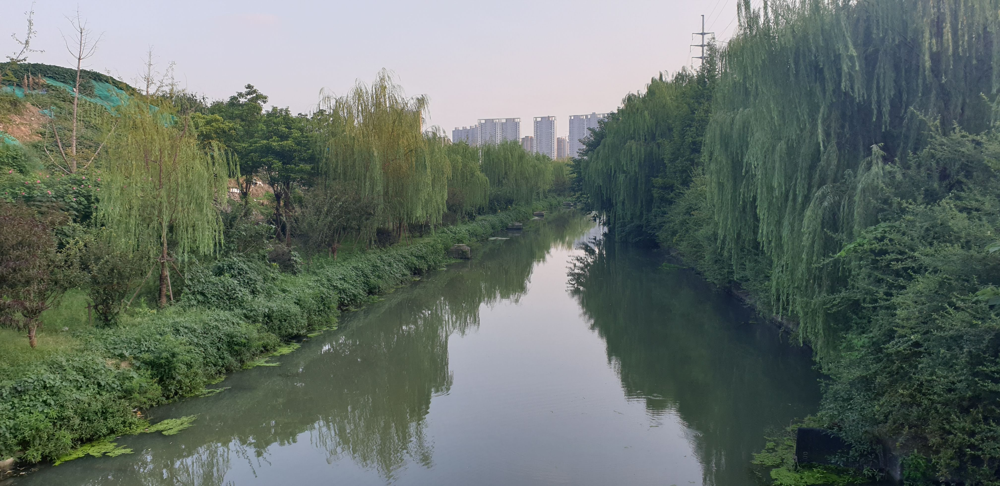
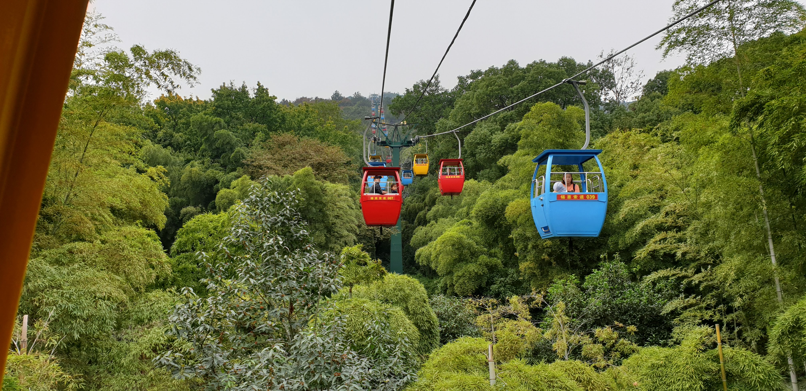
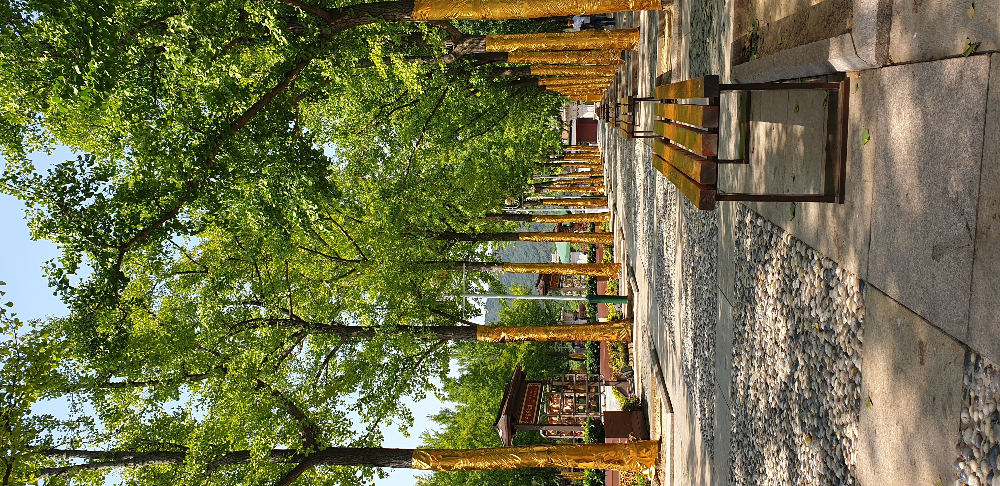
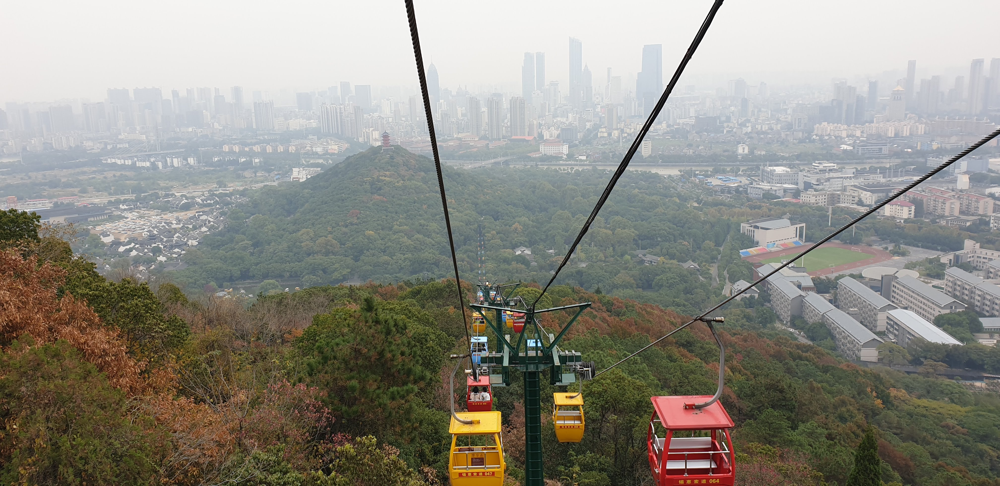
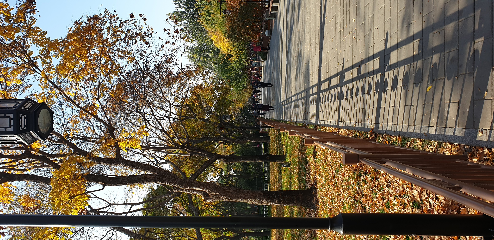
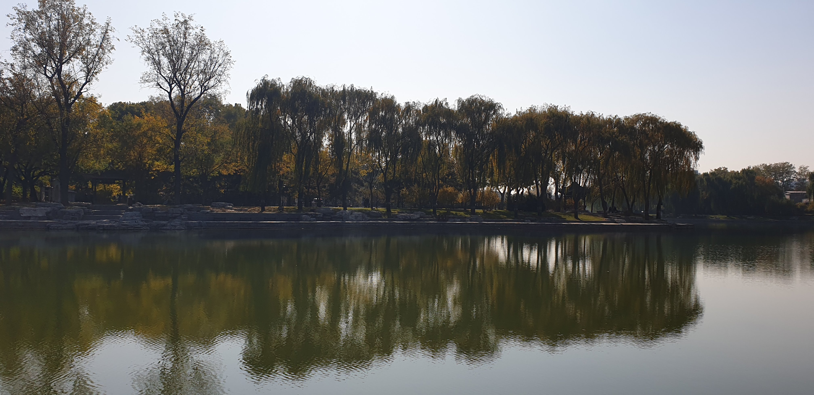
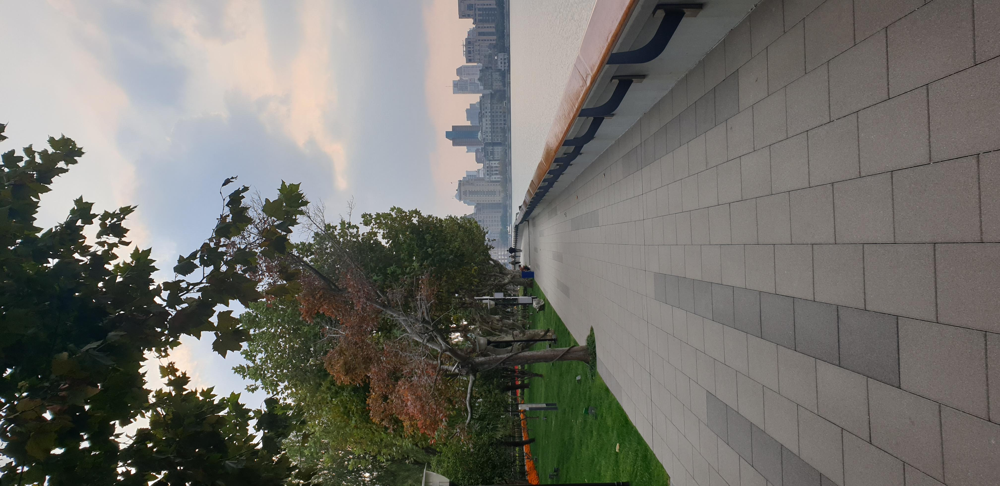
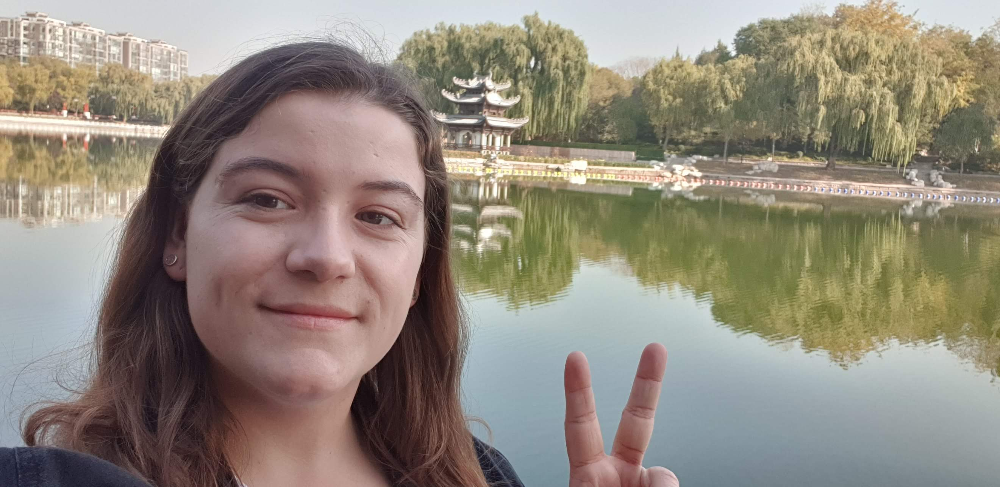
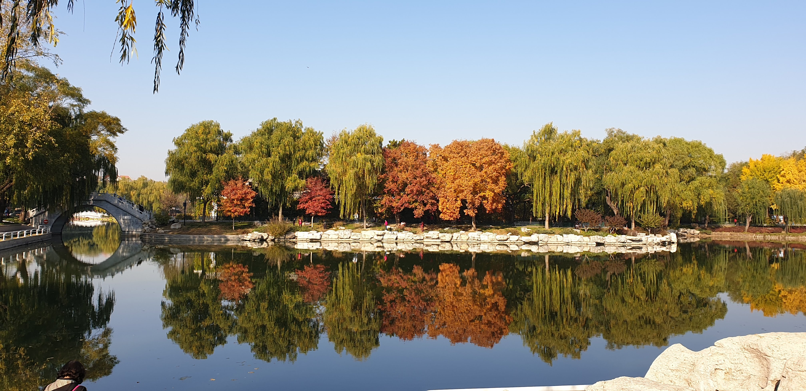
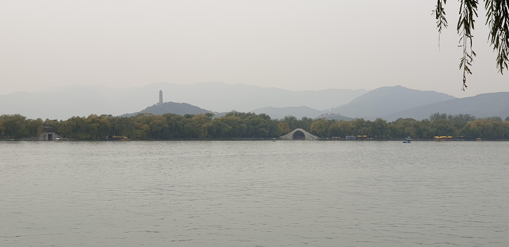
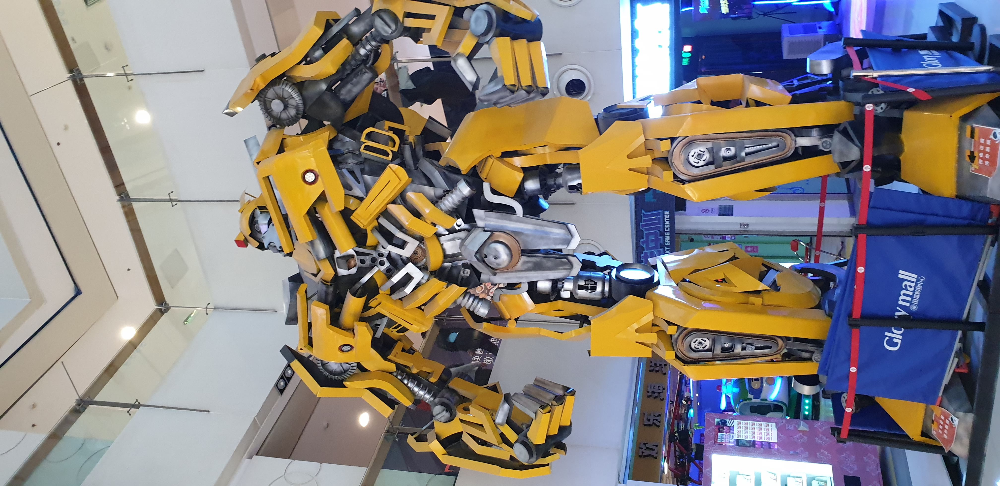
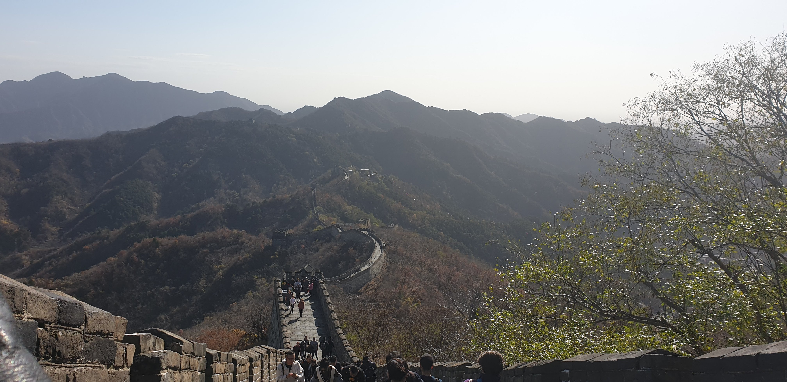
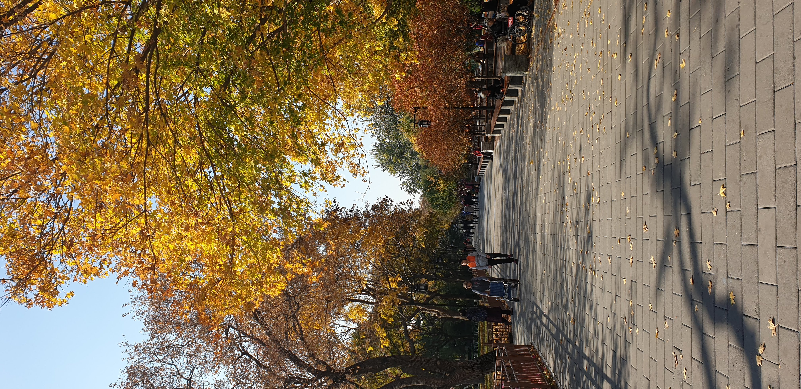
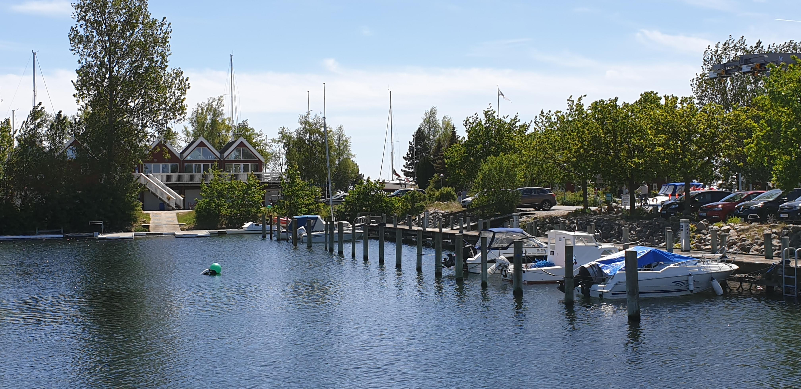
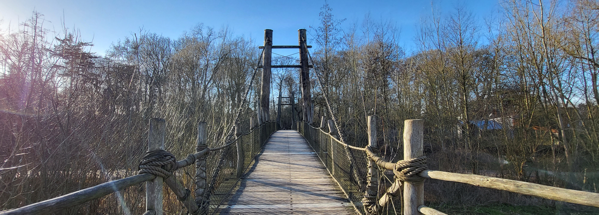